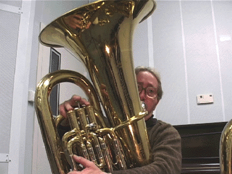
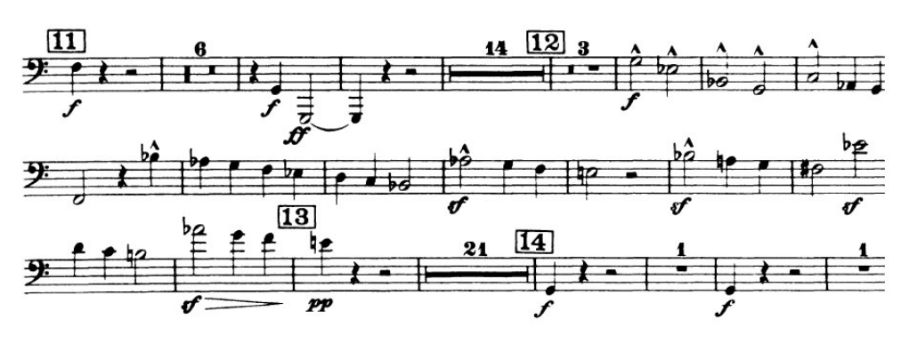

Remembering John
Last week I was contacted by my old teacher and principal tuba player for the BBC Philharmonic, Chris Evans. Chris taught me immediately prior to my time at the Royal College of Music. Chris's patience and help prepared me for my audition with John Jenkins, the tuba professor at the RCM and principal tuba in the Philharmonia orchestra.
Chris had got in touch to ask about John (who, alas, passed away in 2008):
"I started a John Jenkins group on Facebook a little while ago. I didn't know him, I just loved his playing. You were taught by him for 4 yrs, I'd be interested to know what lessons were like with him."
I emailed Chris a lengthy reply - most of which forms the basis of what follows. Please feel free to get in touch if you have any questions.

My first year consisted of playing lots of long notes into the corners of rooms. It was all about feedback.
John very patiently forced me to listen to all the aspects of my playing concerned with sound production: the way I articulated or sustained the note, the graduation of dynamic change, slurring between notes - all that sort of thing - the "nuts and bolts" of physically producing a sound. We also spent a lot of time on breathing - it was stuff that extended the work Chris had been doing with me prior to the RCM (breath from the bottom of your lungs, use your diaphragm to support the note, open up your throat to ease the movement of air, that sort of thing).
Most importantly we spent a lot of time listening to the timbre of the note and working out how I could make the various different sorts of sound a tuba player needed to make, be it a sound that was focussed and "light" (for solo / chamber work) or something big and "fluffy" (for wont of a better word - and I don't mean indistinct, rather, it had a foundational sort of quality) that would blend with the other bass instruments at the bottom of a big orchestral sound. I can't over state how much we did this, week in week out and concentrating on how I might make the sound.
Often the conversation would go along the lines of John saying "when I do X then Y changes, you try it" and I'd watch and listen then I'd have a go myself. John demonstrated how he changed the sound then I would try to work out how I could do the same as him. At all times John insisted I get it right and wouldn't let me off the hook. To be honest, he was a bit of a task-master although it was plain to me that he was focussed on helping me to work out what I needed to do (in a physical sense) to make the sort of sound I needed to develop.
As an 18 year old youth it was sometimes very frustrating. I came to develop an "I'll show you, you daft old bugger" sort of attitude which was also very satisfying for those times when John gave me a compliment. He knew how to balance use of the carrot and stick.
I remember Steve Follant (who was in his final year during my first year) saying something along the following lines to me (paraphrased), "the thing about John is you turn up at the RCM all cocky and in the first year he kicks your arse around the room, takes your playing apart and then helps you to reassemble it. Stick with it, it's worth it."
I wasn't put in an orchestra until my final term of the first year - even then I was just 2nd tuba for John Adam's Harmonielehre. I spent most of my time in my first year playing in quintets and brass ensembles. This was not a bad thing since I had David Mason, Arthur Wilson and other hugely experienced musicians pass on a lot of musical lore and wrinkles. It was a lot of fun and my love of chamber music is directly related to their coaching. I was also coming to terms with the rather onerous academic demands I had to meet (I was on an academic rather than performance related degree).
At the end of the year we had to do our technical exams and I was expecting some sort of slow / low study a la Blazevich, given all the long notes I'd been playing.
Actually, he set something from Kopprasch that was fast and in a "difficult" key - number 20 I think. We re-focussed during the summer term on getting around the tuba, being nimble and not just "fluffing it".
We started very slow, focusing on small chunks, made sure all the notes were secure and gradually stitched the piece together and sped things up. Again, the discipline of this was a great experience and taught me a lot about how it should feel to go through this process (every teacher says to start slowly and speed up, but John actually forced me to do it in the lessons and he wasn't satisfied until I'd done it properly).
At the end of my first year I was surprised to learn I'd got a 1st and won a prize for my tuba playing. That was important - work appeared to be paying off.
My second and third years were very different ~ I really felt I was flourishing as a tuba player: I was literally in everything in terms of ensemble playing through to orchestral work. I was also in some really great concerts that I'll remember until my dying day - I was playing with my friends and loving it. My academic studies were also opening up new stuff: I discovered philosophy, re-learned how to program computers, spent hours in the London galleries and read poetry and literature voraciously. It was an exciting time and John contributed to it!
The lessons changed from being a sort of lobotomy of my playing to focusing on orchestral excerpts and having fun playing actual pieces of tuba repertoire! I was having fun and I think John was too. I remember lots of laughter (squeaking my way through Berlioz's Le Corsaire ended in tears etc.).

In terms of orchestral excerpts I think all of us (students) would look at the repertoire he was working on in the Philharmonia. We got to try out all sorts of different stuff. We'd play through the repertoire in our lessons with John then go listen to him perform it in the evening. This would be in addition to the orchestral repertoire we played as members of the various RCM orchestras too. Finally, (although I may be mis-remembering this) I think we had to prepare excerpts for our technical exams at the end of the year.
I remember him being opinionated about how orchestral stuff should be played and again he was a stickler for detail. It was at this time we worked a lot on breathing - basically ensuring we had enough support left in the tank for what we needed to do in an orchestral context. I'm pretty certain he had a third lung - he could sustain notes louder and longer than anyone I've ever met and his pianissimo pedals were smooth and consistent. All thanks to exceptional breath control. He was a great musical and technical role model.
When it came to solo or chamber music he would help from a technical perspective but I was left alone to fathom the musicality - he was a lot less opinionated about the solo stuff than the orchestral things. Of course he'd make suggestions but since I had lots of ideas about how I wanted to play things he just left me to my own devices (although he'd sometimes play devil's advocate). I think he quite enjoyed that I knew my own mind in this sense: I'd play something and he'd have a wry smile on his face. I'd ask "what?" and he'd reply, "oh, nothing...". It was obvious he wouldn't have played it like that but he let me get on with it. I guess if I'd parped out something tasteless that's when he'd switch to the devil's advocate questions, "why not try..?" or "have you thought about..?".
Once again, I had the likes of David Mason and Arthur Wilson coaching chamber music and full brass sectional orchestral excerpts (I particularly remember a great Walton 1 blow through with Arthur - such a gentleman) and I think Peter Bassano took the helm as head of brass at this time. He had us doing some fun chamber music - I remember a crazy quintet called "The Rite of Lucifuge", notes all over the place over more than a four octave range, great fun to play though, and John had been the tuba player at its premier (as a member of the Equale Brass quintet I believe).
I guess the most important thing about John was that he was there and students could watch and listen. Having him sit next to you and produce an amazing sounding phrase gave you no room to manoeuver - you had to try to play it like that (or that's how I felt anyway). It was also fun to see him totally cock things up if only to see how he recovered (he'd cock up a phrase, mutter stuff under his breath and try again until he was happy with the result - the important take away for me was learning what he did to put stuff right).
Finally, he obviously cared deeply for his students. I remember him "having something in his eye" when we left the RCM and got together for drinks (three of us finished at the same time: I did a three year academic course, and there was another on the four year performer's diploma and yet another post-grad). There was definitely a "good vibe" amongst all of us tuba related folk at the RCM and I remember feeling very sad that it was all coming to an end. It was all down to John.
In the end I won prizes in each of my three years for my tuba playing. Again, much of this was down to John's stewardship.
If you want to see him in action, in a pedagogical sense, there are some videos online created for a guide to the orchestra by Andrew Hugill (a professor at Bath Spa University). With Andrew's permission I've collated them into the short (18 minute) video of John embedded below:
I still play at a high level, although this depends on my "real work" related time constraints. Music is still very important to me and I often miss playing my tuba. However, my work in computing is also lots of fun, affords me the opportunity to work with some amazingly smart people and also travel the world. Music makes a great counterpoint - I feel it quite a privilege that I've had the training so that I can enjoy music in the way that I can. It's also important in another respect, it's how I met Mary and it's something we have in common and share.
Writing this makes me realise what a privilege it was to know and learn from John. It makes me sad that he's gone - I'd have loved to have been able to buy him a drink and say a proper "thank you".
Rest in peace.